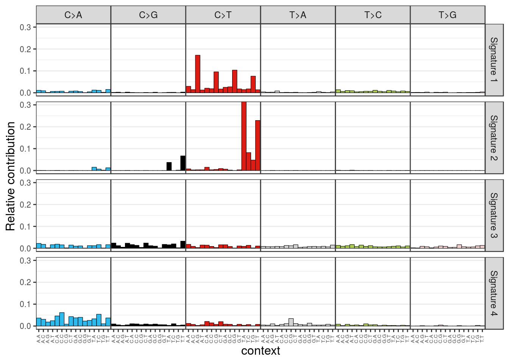

Last updated: 2018-09-28
workflowr checks: (Click a bullet for more information) ✖ R Markdown file: uncommitted changes
The R Markdown is untracked by Git. To know which version of the R Markdown file created these results, you’ll want to first commit it to the Git repo. If you’re still working on the analysis, you can ignore this warning. When you’re finished, you can run wflow_publish to commit the R Markdown file and build the HTML.
✔ Environment: empty
Great job! The global environment was empty. Objects defined in the global environment can affect the analysis in your R Markdown file in unknown ways. For reproduciblity it’s best to always run the code in an empty environment.
✔ Seed:
set.seed(20180928)
The command set.seed(20180928) was run prior to running the code in the R Markdown file. Setting a seed ensures that any results that rely on randomness, e.g. subsampling or permutations, are reproducible.
✔ Session information: recorded
Great job! Recording the operating system, R version, and package versions is critical for reproducibility.
✔ Repository version: 72fc62c
wflow_publish or wflow_git_commit). workflowr only checks the R Markdown file, but you know if there are other scripts or data files that it depends on. Below is the status of the Git repository when the results were generated:
Ignored files:
Ignored: .Rhistory
Ignored: .Rproj.user/
Ignored: analysis/GBM_Analysis_cache/
Untracked files:
Untracked: 24_changePoints.tsv
Untracked: Brn_sig.maf
Untracked: Mutational_Signature_files/
Untracked: analysis/GBM_Analysis.Rmd
Untracked: analysis/Mutational_Signature.Rmd
Untracked: docs/figure/
ref_genome <- "BSgenome.Hsapiens.UCSC.hg19"
library(ref_genome, character.only = TRUE)Loading required package: BSgenomeLoading required package: rtracklayerfaf <- FaFile('/home/sieny/snpEff/Human_Ref/hg19.fa')setwd('/home/sieny/Projects/GBM/New_Threshold/')
files <- list.files(pattern = 'passOnly.vcf$')
# Exclude normal sample
files <- files[-19]
fnames <- str_split(files,pattern = "\\.") %>% sapply( function(x)x[1])
head(fnames)[1] "tumor_1_snvs_indels_filtered_passOnly"
[2] "tumor_10_snvs_indels_filtered_passOnly"
[3] "tumor_11_snvs_indels_filtered_passOnly"
[4] "tumor_12_snvs_indels_filtered_passOnly"
[5] "tumor_13_snvs_indels_filtered_passOnly"
[6] "tumor_14_snvs_indels_filtered_passOnly"snames <- str_extract(fnames,'[a-z]?\\d+')muts = mutations_from_vcf(vcfs[[1]])
head(muts,12) [1] "G>A" "T>C" "C>T" "A>G" "G>A" "A>G" "C>T" "A>G" "G>A" "G>A" "A>G"
[12] "C>A"context = mut_context(vcfs[[1]], ref_genome)
head(context, 12) chr1 chr1 chr1 chr1 chr1 chr1 chr1 chr1 chr1 chr1 chr1 chr1
"CGG" "CTG" "TCA" "CAG" "GGG" "AAT" "GCG" "GAT" "CGG" "CGC" "CAC" "GCC" type_occurrences <- mut_type_occurrences(vcfs, ref_genome)
type_occurrences C>A C>G C>T T>A T>C T>G C>T at CpG C>T other
1 515 298 1200 227 912 239 385 815
10 550 418 1806 268 1382 369 634 1172
11 95 49 277 31 183 42 101 176
12 285 210 809 116 564 154 313 496
13 282 180 1199 649 905 64 270 929
14 572 362 1446 198 1082 252 509 937
16 278 202 887 142 687 158 292 595
17 363 100 421 62 274 56 171 250
18 244 58 217 33 146 37 78 139
2 1477 1115 4300 617 3240 776 1654 2646
20 2749 611 2350 361 1732 462 871 1479
21 389 156 608 88 443 105 222 386
22 498 172 639 113 478 128 220 419
23 3856 1065 4176 623 3132 795 1618 2558
24 2734 327 3436 300 1521 613 1411 2025
25 237 181 648 98 495 122 220 428
27 545 369 1564 232 1111 284 608 956
28 95 36 194 26 120 32 74 120
3 0 0 1 0 0 0 1 0
30 1554 996 3874 554 2934 720 1512 2362
31 873 478 1877 295 1433 378 649 1228
32 556 332 1391 220 1043 241 458 933
4 316 233 1029 143 736 198 383 646
5 721 597 2345 388 1838 464 917 1428
6 10 11 47 5 28 6 24 23
7 242 171 716 141 509 105 279 437
8 233 153 589 93 460 118 212 377
9 459 332 1264 228 1039 239 438 826
c6 539 417 1730 266 1339 304 656 1074 plot_spectrum(type_occurrences)mut_mat <- mut_matrix(vcf_list = vcfs, ref_genome = ref_genome)
plot_96_profile(mut_mat[,c(1,7)])## De Novo Signature
mut_mat <- mut_mat + 0.0001
library("NMF")
#estimate <- nmf(mut_mat, rank=2:5, method="brunet", nrun=10, seed=123456) sp_url <- paste("http://cancer.sanger.ac.uk/cancergenome/assets/",
"signatures_probabilities.txt", sep = "")
cancer_signatures = readr::read_delim(sp_url,delim = "\t")Warning: Missing column names filled in: 'X34' [34], 'X35' [35],
'X36' [36], 'X37' [37], 'X38' [38], 'X39' [39], 'X40' [40]Parsed with column specification:
cols(
.default = col_double(),
`Substitution Type` = col_character(),
Trinucleotide = col_character(),
`Somatic Mutation Type` = col_character(),
X34 = col_character(),
X35 = col_character(),
X36 = col_character(),
X37 = col_character(),
X38 = col_character(),
X39 = col_character(),
X40 = col_character()
)See spec(...) for full column specifications.new_order = match(row.names(mut_mat), cancer_signatures$`Somatic Mutation Type`)cancer_signatures = cancer_signatures[as.vector(new_order),]
cancer_signatures <- as.data.frame(cancer_signatures)
row.names(cancer_signatures) = cancer_signatures$`Somatic Mutation Type`cancer_signatures = as.matrix(cancer_signatures[,4:33])sig_hclust = cluster_signatures(cancer_signatures)
col_order = colnames(cancer_signatures)[sig_hclust$order]
plot_96_profile(cancer_signatures[,1:4], condensed = TRUE, ymax = 0.3)
cos_sim(mut_mat[,1], cancer_signatures[,1])[1] 0.6784088 cos_sim_samples_signatures = cos_sim_matrix(mut_mat, cancer_signatures)
plot_cosine_heatmap(cos_sim_samples_signatures,
col_order = col_order,
cluster_rows = TRUE)sessionInfo()R version 3.5.0 (2018-04-23)
Platform: x86_64-pc-linux-gnu (64-bit)
Running under: Ubuntu 16.04.5 LTS
Matrix products: default
BLAS: /opt/microsoft/ropen/3.5.0/lib64/R/lib/libRblas.so
LAPACK: /opt/microsoft/ropen/3.5.0/lib64/R/lib/libRlapack.so
locale:
[1] LC_CTYPE=en_US.UTF-8 LC_NUMERIC=C
[3] LC_TIME=en_US.UTF-8 LC_COLLATE=en_US.UTF-8
[5] LC_MONETARY=en_US.UTF-8 LC_MESSAGES=en_US.UTF-8
[7] LC_PAPER=en_US.UTF-8 LC_NAME=C
[9] LC_ADDRESS=C LC_TELEPHONE=C
[11] LC_MEASUREMENT=en_US.UTF-8 LC_IDENTIFICATION=C
attached base packages:
[1] parallel stats4 stats graphics grDevices utils datasets
[8] methods base
other attached packages:
[1] BSgenome.Hsapiens.UCSC.hg19_1.4.0 BSgenome_1.48.0
[3] rtracklayer_1.40.6 stringr_1.3.1
[5] data.table_1.11.4 SomaticSignatures_2.16.0
[7] VariantAnnotation_1.26.1 Rsamtools_1.32.3
[9] Biostrings_2.48.0 XVector_0.20.0
[11] SummarizedExperiment_1.10.1 DelayedArray_0.6.6
[13] BiocParallel_1.14.2 matrixStats_0.54.0
[15] MutationalPatterns_1.6.1 NMF_0.21.0
[17] Biobase_2.40.0 cluster_2.0.7-1
[19] rngtools_1.3.1 pkgmaker_0.27
[21] registry_0.5 GenomicRanges_1.32.6
[23] GenomeInfoDb_1.16.0 IRanges_2.14.11
[25] S4Vectors_0.18.3 BiocGenerics_0.26.0
loaded via a namespace (and not attached):
[1] colorspace_1.3-2 rprojroot_1.3-2
[3] biovizBase_1.28.0 htmlTable_1.12
[5] base64enc_0.1-3 ggdendro_0.1-20
[7] dichromat_2.0-0 proxy_0.4-22
[9] rstudioapi_0.7 bit64_0.9-7
[11] AnnotationDbi_1.42.1 codetools_0.2-15
[13] splines_3.5.0 R.methodsS3_1.7.1
[15] ggbio_1.28.0 doParallel_1.0.13
[17] knitr_1.20 Formula_1.2-3
[19] workflowr_1.0.1 gridBase_0.4-7
[21] R.oo_1.22.0 graph_1.58.0
[23] readr_1.1.1 compiler_3.5.0
[25] httr_1.3.1 backports_1.1.2
[27] assertthat_0.2.0 Matrix_1.2-14
[29] lazyeval_0.2.1 acepack_1.4.1
[31] htmltools_0.3.6 prettyunits_1.0.2
[33] tools_3.5.0 bindrcpp_0.2.2
[35] gtable_0.2.0 glue_1.3.0
[37] GenomeInfoDbData_1.1.0 reshape2_1.4.3
[39] dplyr_0.7.6 Rcpp_0.12.18
[41] iterators_1.0.10 ensembldb_2.4.1
[43] XML_3.98-1.16 zlibbioc_1.26.0
[45] MASS_7.3-49 scales_1.0.0
[47] BiocInstaller_1.30.0 pcaMethods_1.72.0
[49] ProtGenerics_1.12.0 hms_0.4.2
[51] RBGL_1.56.0 AnnotationFilter_1.4.0
[53] RColorBrewer_1.1-2 curl_3.2
[55] yaml_2.1.19 memoise_1.1.0
[57] gridExtra_2.3 ggplot2_3.0.0
[59] biomaRt_2.36.1 rpart_4.1-13
[61] reshape_0.8.7 latticeExtra_0.6-28
[63] stringi_1.2.4 RSQLite_2.1.1
[65] foreach_1.5.0 checkmate_1.8.5
[67] GenomicFeatures_1.32.2 bibtex_0.4.2
[69] rlang_0.2.2 pkgconfig_2.0.2
[71] bitops_1.0-6 pracma_2.1.5
[73] evaluate_0.10.1 lattice_0.20-35
[75] purrr_0.2.5 bindr_0.1.1
[77] labeling_0.3 GenomicAlignments_1.16.0
[79] htmlwidgets_1.2 cowplot_0.9.3
[81] bit_1.1-14 tidyselect_0.2.4
[83] GGally_1.4.0 plyr_1.8.4
[85] magrittr_1.5 R6_2.2.2
[87] Hmisc_4.1-1 DBI_1.0.0
[89] pillar_1.3.0 whisker_0.3-2
[91] foreign_0.8-70 withr_2.1.2
[93] survival_2.41-3 RCurl_1.95-4.11
[95] nnet_7.3-12 tibble_1.4.2
[97] crayon_1.3.4 OrganismDbi_1.22.0
[99] rmarkdown_1.9 progress_1.2.0
[101] grid_3.5.0 blob_1.1.1
[103] git2r_0.21.0 digest_0.6.17
[105] xtable_1.8-3 R.utils_2.6.0
[107] munsell_0.5.0 This reproducible R Markdown analysis was created with workflowr 1.0.1